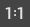

可以更改以下画布设置：
- 画布大小
- 画布全局参数，包括照明、画布比例和画布包裹选项
设置画布大小
应该在开始绘制之前设置画布大小。画布大小由沿着画布高度和宽度的像素数定义。如果尝试更改现有图像的画布大小，“Paint Effects”不会重新对图像采样，但是“Paint Effects”会提示您保存图像，然后创建指定大小的新画布。
设置画布大小
- 选择。此时将打开“设置画布大小”(Set Canvas Size)窗口。
- 输入“X 大小”(X Size)（宽度）和“Y 大小”(Y Size)（高度）值。
- 单击“设置”(Set)。
提示： 若要将缩放因子还原为 1.0（实际像素大小），请单击工具栏上的 1:1 按钮。

设定画布全局参数
可以从“Paint Effects 全局参数”(Paint Effects Globals)窗口中设定画布照明、画布比例和画布包裹选项。
设定画布全局参数
- 在“建模”(Modeling)菜单集中，选择以打开“Paint Effects 全局参数”(Paint Effects Globals)窗口。
提示： 可以指定一个热键来打开“Paint Effects 全局参数”(Paint Effects Globals)窗口。在“热键编辑器”(Hotkey Editor)中的“Paint Effects”下定义 PaintEffectsGlobalSettings。
- 展开“画布”(Canvas)，然后修改全局设置。有关信息，请参见 Paint Effects 全局参数选项。